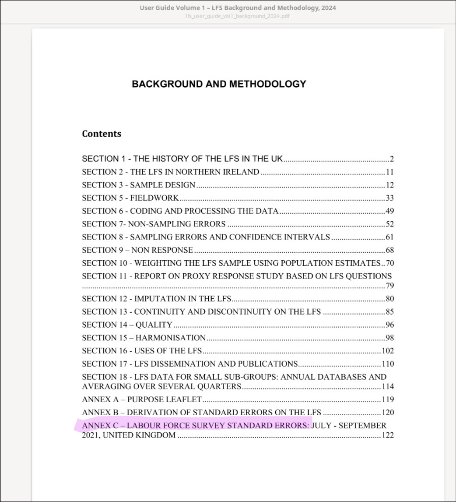
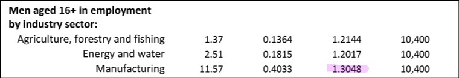

Exercise 4:
Estimate precision and uncertainty
This series of exercises focuses on the precision of estimates calculated from Labour Force Survey data, in other words the degree to which we can trust them to reflect the likely values in the population. In order to do this, we will compute similar measures as before - means and proportions but this time we will be focusing on their confidence intervals.
Learning objectives:
- To be able to compute and interpret confidence intervals of earnings in the LFS;
- To be able to assess the impact of weighting on weighting ;
- To be able to interpret CIs for regional differences;
- To be able to use published LFS design effects and apply them to your own estimates;
Data
In this exercise we will be using Quarterly LFS data for October-December 2024.
To follow the exercise, you need to access the relevant dataset from the UK Data Service: Quarterly Labour Force Survey, October - December, 2024.
Get set up
We will assume that the working directory for this exercise - where syntax files and other materials will be located - will be a folder named LFS_exercises. Once you have downloaded the data, save it somewhere accessible inside LFS_exercises for example in a folder called `Data.
We can now begin analysing the data using R. First let’s load the packages that we are going to need:
Let’s open the dataset.
```{ open, eval=c(-2,-5)} #| echo: -1 #| eval: -2 setwd (“~/”) # setwd (“~/Dropbox/tmps”) setwd (“~/LFS_exercises”)
Importing a Stata format dataset
lfs_od24 <- read_dta( “Data/lfs/UKDA-9349-stata/stata/stata13/lfsp_od24_eul_pwt24.dta” )
To make data manipulation easier, let's create a data frame with just the variables we need for the exercise. We can also use this opportunity to convert categorical variables into factors in order to make them easier to understand.
```{ mydata}
dataex4 <- lfs_od24 |>
select(PERSNO, PIWT24, PWT24,GRSSWK, INECAC05, ILODEFR,
FTPT, HOURPAY, SEX,INDE07M,GOVTOF2 ) |>
mutate(
across(
c(INECAC05:GOVTOF2),\(x) as_factor(x, "both")
)
) |>
droplevels()1. Weighted and unweighted confidence intervals of mean weekly earnings
In this exercise, we will be comparing the mean gross weekly earnings (GRSSWK) and their confidence intervals using weighted and unweighted estimates. As previously, we will be using the weighting variable specifically designed for earnings: PIWT24.
First, let’s examine gross weekly earnings and compute its unweighted mean:
### Raw data
summary(lfs_od24$GRSSWK)
### Removing non-response
summary(lfs_od24$GRSSWK[lfs_od24$GRSSWK>=0])
hist(lfs_od24$GRSSWK[lfs_od24$GRSSWK>=0],
main= "Distribution of weekly earnings, October-December 2024",
xlab = "Gross weekly earnings (GBP)")
### Computing the mean
mw<-mean(lfs_od24$GRSSWK[lfs_od24$GRSSWK>=0],na.rm=T)
mw
Let’s now compute the confidence interval. We need to do it by hand, using the standard deviation sd() function.
As a reminder, the 95% confidence interval of a mean is the value of the mean plus or minus 1.96 times its standard error. The standard error itself is the standard deviation divided by the square root of the sample size:
```{ ci.u} lb<-mw-1.96(s.mw/sqrt(nrow(lfs_od24))) ub<-mw+1.96(s.mw/sqrt(nrow(lfs_od24)))
round(c(mw,lb,ub))
We can now say that on the basis of unweighted sample values, we could be 95% confident that the mean Gross Weekly earnings of the UK population overall range between £`{} round(lb)` and £`{} round(ub)` per week, that is an interval of £`{} round(ub)-round(lb)`.
Let's now look at the weighted estimates. We will be using the same survey data specific functions as in previous exercises.
```{ ci.w}
### Let's declare our data to be survey data with PIWT as weight.
dataex4.s<-as_survey_design(weights=PIWT24,dataex4)
### ... Then get the weights
mw.s<-dataex4.s|>
summarise(survey_mean(GRSSWK,vartype = "ci"))
mw.s
- What are the bounds between which we can be sure 95% of the values can be found, once we weight the data?
- How wide is the weighted confidence interval?
- What is the effect of weighting the data on the precision of estimates
- It is between £
{} round(mw.s[2])and £{} round(mw.s[3])per week - £
{} round(mw.s[3] - mw.s[2]) - The confidence intervals of weighted value tends to be wider than that of unweighted estimates, which makes them at the same time more representative but less precise than unweighted ones.
2. Part-time female employees across regions
In this second exercise, we will be looking at how to obtain and interpret confidence intervals of proportions by comparing the percentages of female employees in London and the North West of England. First, let’s examine the variable for regions:
Let’s recode the missing values in FTPT into system missing.
dataex4$FTPT2<-ifelse(dataex4$FTPT=="[1] Full time" | dataex4$FTPT=="[2] Part time",as.character(dataex4$FTPT),NA)
dataex4$FTPT2<-as.factor(dataex4$FTPT2)
### We recreate a weights informed survey design object
dataex4.s<-as_survey_design(weights=PWT24,dataex4)
ldn<-dataex4.s |>
filter(SEX=="[2] Female" & ILODEFR=="[1] In employment" & GOVTOF2=="[8] London") |>
group_by(FTPT2) |>
cascade(prop=survey_mean(vartype = "ci"))
nw<-dataex4.s |>
filter(SEX=="[2] Female" &
ILODEFR=="[1] In employment" &
GOVTOF2=="[2] North West") |>
group_by(FTPT2) |>
cascade(prop=survey_mean(vartype = "ci"))
### Raw results for London
ldn
### Formatted results for the North West
round(100*
nw |>
filter(FTPT2=="[2] Part time") |>
select(prop,prop_low,prop_upp),
2)
### Alternative method
100*svyby(
~I(FTPT2=="[2] Part time"),~(SEX=="[2] Female" &
ILODEFR=="[1] In employment" &
GOVTOF2=="[2] North West" ),
dataex4.s,
svyciprop,
vartype = "ci"
)- Are the width of the confidence intervals for London and The North West comparable?
- Do the CI overlap? How do you interpret this?
- Is it the same with the differences between the North East and the North West of England?
- Yes, they are very close at about 5 percentage points.
- They don’t overlap, meaning that the difference are likely to be significant (at the 95% threshold) in the population
- The confidence intervals clearly overlap. It is unlikely that significant difference in the proportion of female part-timers significantly differ between the two regions.
3. Adjusting CIs with published design effects
Design effects account for the impact of survey design (e.g., clustering and stratification) on the precision of estimates. Here, we will be adjusting the CI of the proportion of women and men employed (ILODEFR) in manufacturing (INDE07M) in their main job using design effects published in Volume 1 of the LFS documentation.
Let’s begin by examining the sector variable:
cbind(Freq.=table(dataex4$INDE07M[dataex4$ILODEFR=="[1] In employment"]),
Pct.=round(100*
prop.table(
table(dataex4$INDE07M[dataex4$ILODEFR=="[1] In employment"])),
1)
)Let’s then compute the proportion of people employed in manufacturing:
fem<-dataex4.s |>
filter(SEX=="[2] Female" &
ILODEFR=="[1] In employment") |>
group_by(INDE07M=="[3] C -Manufacturing") |>
cascade(prop=survey_mean(vartype = "ci"))
mam<-dataex4.s |>
filter(SEX=="[1] Male" &
ILODEFR=="[1] In employment") |>
group_by(INDE07M=="[3] C -Manufacturing") |>
cascade(prop=survey_mean(vartype = "ci"))… and examine the results for females:
… And males:
The above results are ‘naive’ confidence intervals ie confidence intervals that do not take into account survey design and depending on the case, maybe too narrow ie overstate the precision of the estimates - or too wide.
In order to compute more robust standard errors, we need to have access to survey design variables such as strata and primary sampling units identifiers, These are unfortunately withheld by the producers of the LFS< due to concerns about potential disclosure of personal information.
Another approach that can be implemented for some headline estimates consists in adapting confidence intervals based on the design factors (DEFF) published by the ONS. These can be in the the Volume 1 of the documentation. For the October-December edition of the LFS, this file is called: lfs_user_guide_vol1_background_2024.pdf.


The design effects for the proportion of female and males employed in manufacturing are respectively 1.2216 and 1.3048:


We now need to adapt these to the confidence intervals we computed earlier. In order to do this, we need our original standard errors - as the DEFF are meant to adjust these. We can then obtain the adjusted CIs for females:
sef<-dataex4.s |>
filter(SEX=="[2] Female" &
ILODEFR=="[1] In employment") |>
group_by(INDE07M=="[3] C -Manufacturing") |>
cascade(prop=survey_mean(vartype = "se"))
round(
c(100*sef$prop[2],
100*sef$prop[2]-1.96*sqrt(sef$prop_se[2]*1.2216),
100*sef$prop[2]+1.96*sqrt(sef$prop_se[2]*1.2216)
),2
)… Then for males:
sem<-dataex4.s |>
filter(SEX=="[1] Male" &
ILODEFR=="[1] In employment") |>
group_by(INDE07M=="[3] C -Manufacturing") |>
cascade(prop=survey_mean(vartype = "se"))
round(
c(100*sem$prop[2],
100*sem$prop[2]-1.96*sqrt(sem$prop_se[2]*1.3048),
100*sem$prop[2]+1.96*sqrt(sem$prop_se[2]*1.3048)
),2
)- What has happened to the confidence intervals after we adjusted them?
- What if we wanted to adjust our earlier estimates of gross weekly earnings for the design effects?
1.They have narrowed, which means that in this case, taking the survey design into account improves the precision of estimates.
2. We would not be able to do this with the safeguarded version of the data. We would need to use the secured version, and compute the adjusted estimates ourselves.